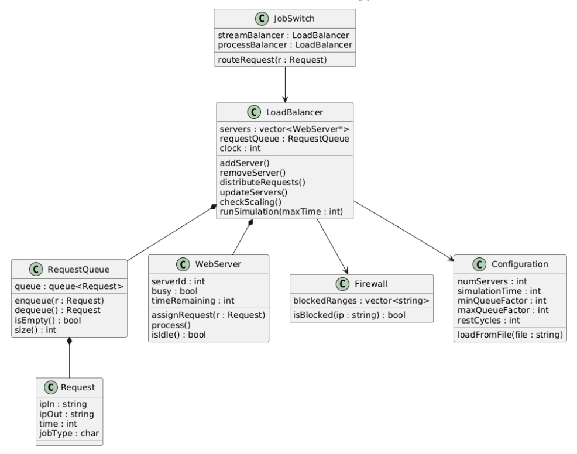

System Flow Diagram
The diagram below illustrates the workflow of the load balancer, including request generation, queue management, server processing, and dynamic scaling.

Design Overview
This Flowchart by Cloud AG lays out how a large company manages incoming web requests using a load balancer and dynamically allocated web servers. Requests are generated with random IP addresses, job types, and processing times, then placed into a request queue.
Main Components
- Request: Contains IP in, IP out, processing time, and job type.
- Request Queue: Stores incoming requests in FIFO order.
- Web Server: Processes one request at a time.
- Load Balancer: Distributes requests and manages server scaling.
Dynamic Scaling Logic
The load balancer monitors the size of the request queue relative to the number of active servers. If the queue grows too large, new servers are added. If the queue becomes too small, servers are removed to avoid underutilization.
Security and Extensions
An IP range blocker acts as a firewall to prevent denial of service attacks. For additional functionality, a higher level switch can route streaming and processing jobs to separate load balancers.